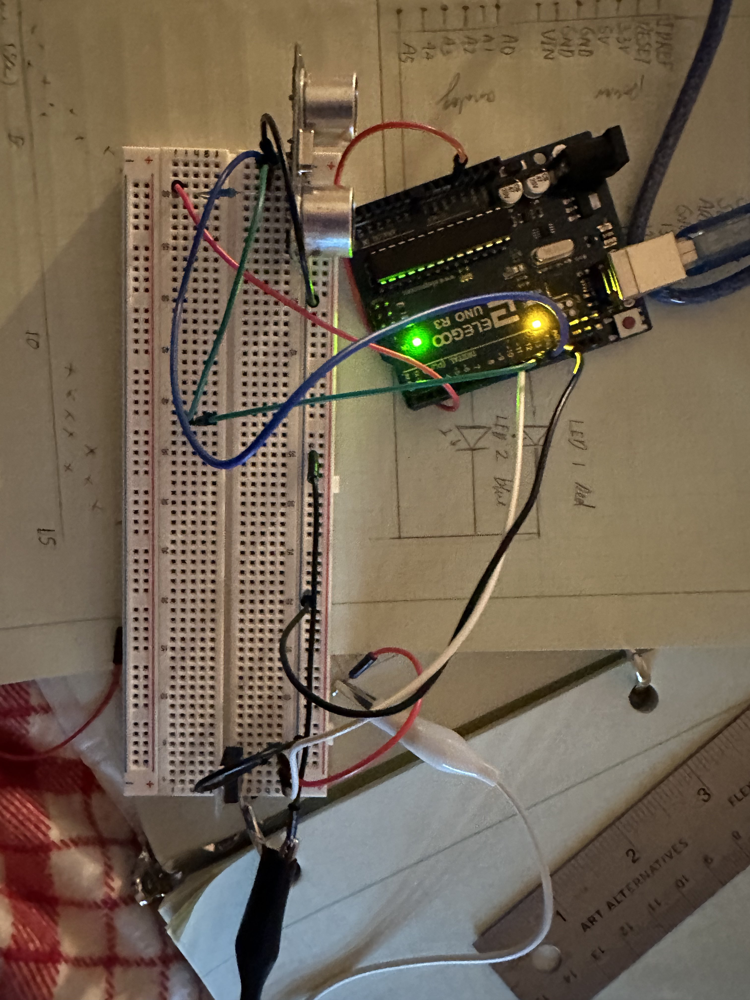
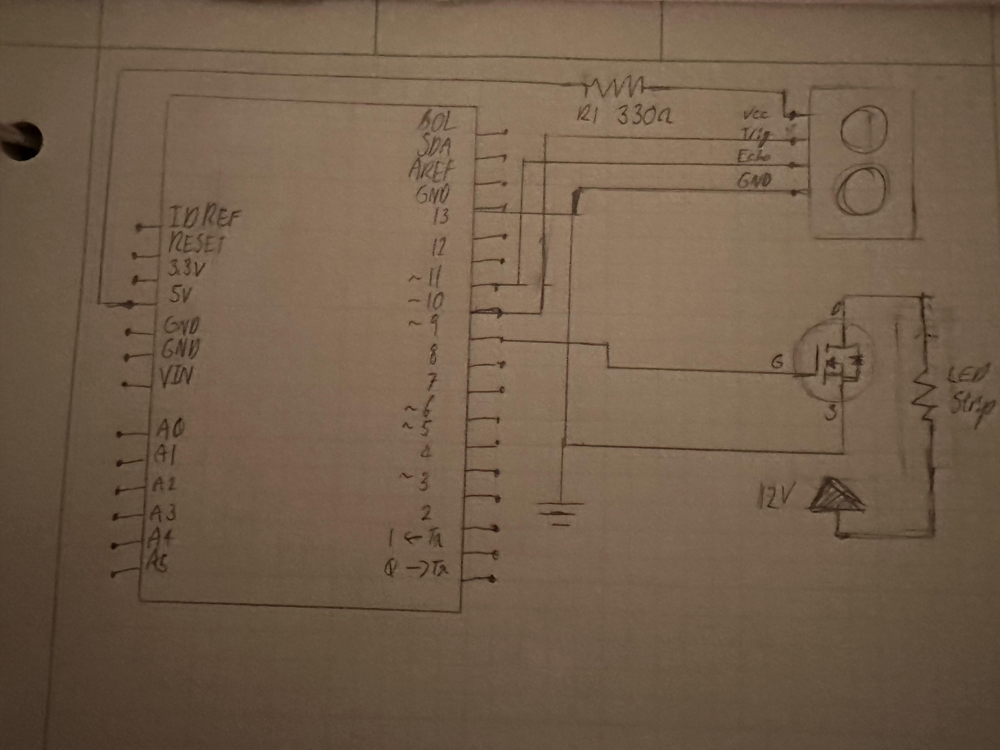
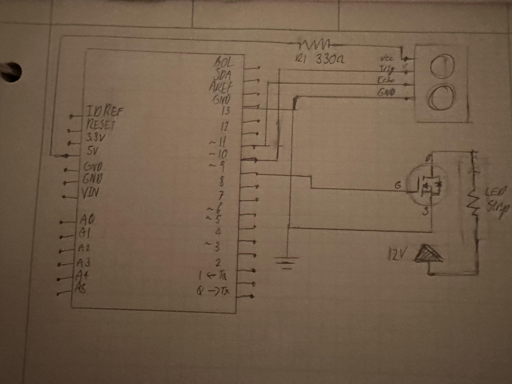
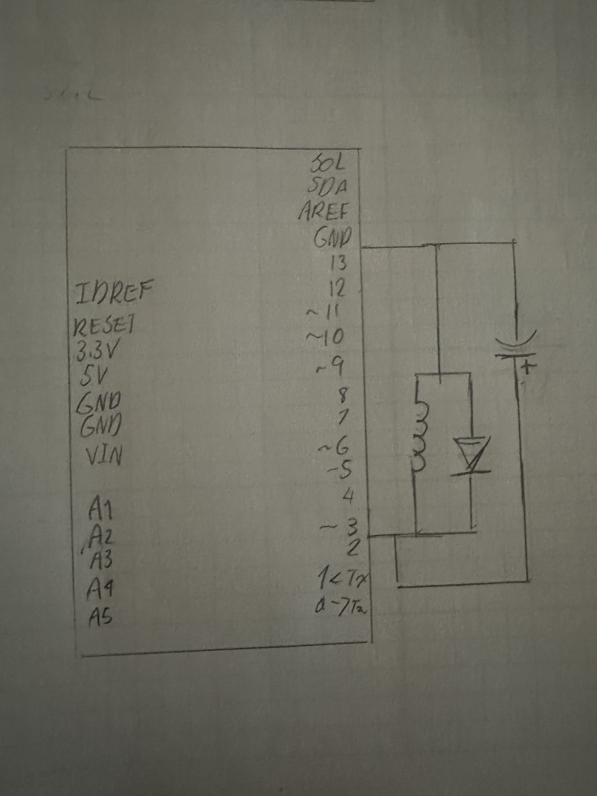
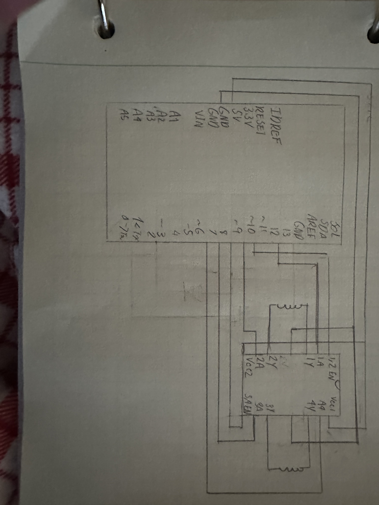

Skye's Assignment 5: High(er) voltage and transistors!

 

The data sheet for the ultasonic sensor showed an operating current of 15 mili amps so i used a 330 ohm resistor so that with the 5V the current would be close to that.
Code:
// used Tim Eckel's NewPing libary, v1.9.7 and example code as referance.
#include < NewPing.h > //includes the libary
int sensorValue; // initalizing value for data after being converted and mapped
int echotime; // initializing value for data before being processed
#define MAX_DISTANCE 30 //because i wanted the leds to light up based on a close range of 30cm.
NewPing sonar(10, 11, MAX_DISTANCE); // sets up of pin for sending and recieving value and maximum distance.
void setup(){ //start of code I want to run once
Serial.begin(9600); // Open serial monitor at 9600 baud to see ping results.
}
void loop() //start of code I want to repeat
{
sensorValue = map(sonar.convert_cm (echotime), 1, 20, 0, 255); //converts the time based data to be distance and maps it to be a value for the LEDs, cannot be 0 because that is the default when the sensor has no reading in range
analogWrite(9, 255-sensorValue); //writes the value for the transitor/ LEDs and inverts the value in the range so it's brighter as the distance is lower
Questions:
1: This is the datasheet for the n-mosfet transistor: https://www.diodes.com/assets/Datasheets/DMT6009LCT.pdLinks to an external site.f What is the absolute maximum amount of current between pins 2 and 3?
The servo motor's readings are a pulse once per 20ms normally, but due to the delay the pulse would occur only every 0.1 seconds and the duty cycle would be slightly longer with each iteration until i is greater than 180.
2: Draw a schematic for a circuit with using at least your arduino, a DC motor, a flyback diode, and capacitors between power and ground. Find parts with datasheets you could use for each of these schematic components.

3: Here is the datasheet for the L293D chip: https://www.ti.com/product/L293DLinks to an external site.. Draw a schematic using at least your arduino, this chip, and two motors. Write (pseudo) code that shows how you would move the motors both forward, both back, then one forward one back, and one back then forward.

analogWrite(enablePin1, speed);
analogWrite(enablePin2, speed);
digitalWrite(in1Pin, low)
digitalWrite(in2Pin, high)
digitalWrite(in3Pin, low)
digitalWrite(in4Pin, high)
delay
digitalWrite(in1Pin, high)
digitalWrite(in2Pin, high)
digitalWrite(in3Pin, low)
digitalWrite(in4Pin, high)
delay
digitalWrite(in1Pin, low)
digitalWrite(in2Pin, high)
digitalWrite(in3Pin, high)
digitalWrite(in4Pin, low)
delay
digitalWrite(in1Pin, low)
digitalWrite(in2Pin, low)
digitalWrite(in3Pin, low)
digitalWrite(in4Pin, high)
delay
digitalWrite(in3Pin, high)
digitalWrite(in4Pin, low)